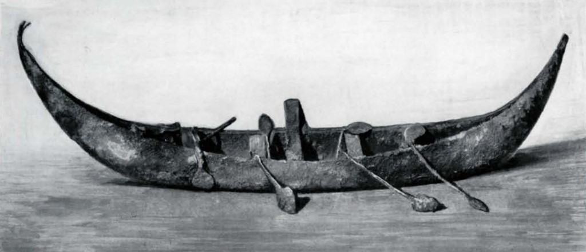
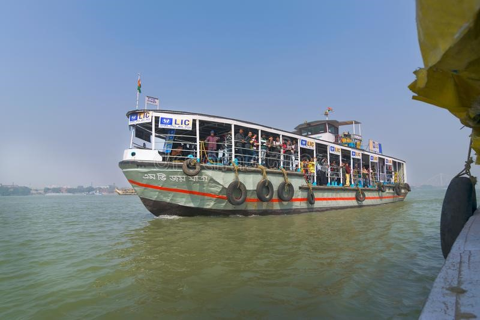

After Homo erectus possibly using watercraft more than a million years ago crossing straits between landmasses, boats have served as transportation far into the pre-historic. Circumstantial evidence, such as the early settlement of Australia over 40,000 years ago,  findings in Crete dated 130,000 years ago, and in Flores dated to 900,000 years ago, suggest that boats have been used since prehistoric times. The earliest boats are thought to have been dugouts, and the oldest boats found by archaeological excavation date from around 7,000–10,000 years ago. The oldest recovered boat in the world, the Pesse canoe, found in the Netherlands, is a dugout made from the hollowed tree trunk of a Pinus sylvestris that was constructed somewhere between 8200 and 7600 BC. This canoe is exhibited in the Drents Museum in Assen, Netherlands. Other very old dugout boats have also been recovered. Rafts have. operated for at least 8,000 years. A 7,000-year-old seagoing reed boat has been found at site H3 in Kuwait. Boats were used between 4000 and 3000 BC in Sumer, ancient Egypt[ and in the Indian Ocean.
Boats played an important role in the commerce between the Indus Valley civilizatios and Mesopotamia. Evidence of varying models of boats has also been discovered at various Indus Valley archaeological sites. Uru craft originate in Beypore, a village in south Calicut, Kerala, in southwestern India. This type of mammoth wooden ship was constructed solely of teak, with a transport capacity of 400 tonnes. The ancient Arabs and Greeks used such boats as trading vessels.
A water taxi or a water bus is a watercraft used to provide public or private transport, usually, but not always, in an urban environment. Service may be scheduled with multiple stops, operating in a similar manner to a bus, or on demand to many locations,  operating in a similar manner to a taxi. A boat service shuttling between two points would normally be described as a ferry rather than a water bus or taxi.
Until the mid-19th century most boats were made of natural materials, primarily wood, although reed, bark and animal skins were also used. Early boats include the bound-reed style of boat seen in Ancient Egypt, the birch bark canoe, the animal hide-covered kayak and coracle and the dugout canoe made from a single log. By the mid-19th century, many boats had been built with iron or steel frames but still planked in wood. In 1855 ferro-cement boat construction was patented by the French, who coined the name "ferciment". This is a system by which a steel or iron wire framework is built in the shape of a boat's hull and covered over with cement. Reinforced with bulkheads and other internal structure it is strong but heavy, easily repaired, and, if sealed properly, will not leak or corrode.
As the forests of Britain and Europe continued to be over-harvested to supply the keels of larger wooden boats, and the Bessemer process (patented in 1855) cheapened the cost of steel, steel ships and boats began to be more common. By the 1930s boats built entirely of steel from frames to plating were seen replacing wooden boats in many industrial uses and fishing fleets. Private recreational boats of steel remain uncommon. In 1895 WH Mullins produced steel boats of galvanized iron and by 1930 became the world's largest producer of pleasure boats. Mullins also offered boats in aluminum from 1895 through 1899 and once again in the 1920s, but it wasn't until the mid-20th century that aluminium gained widespread popularity. Though much more expensive than steel, aluminum alloys exist that do not corrode in salt water, allowing a similar load carrying capacity to steel at much less weight.